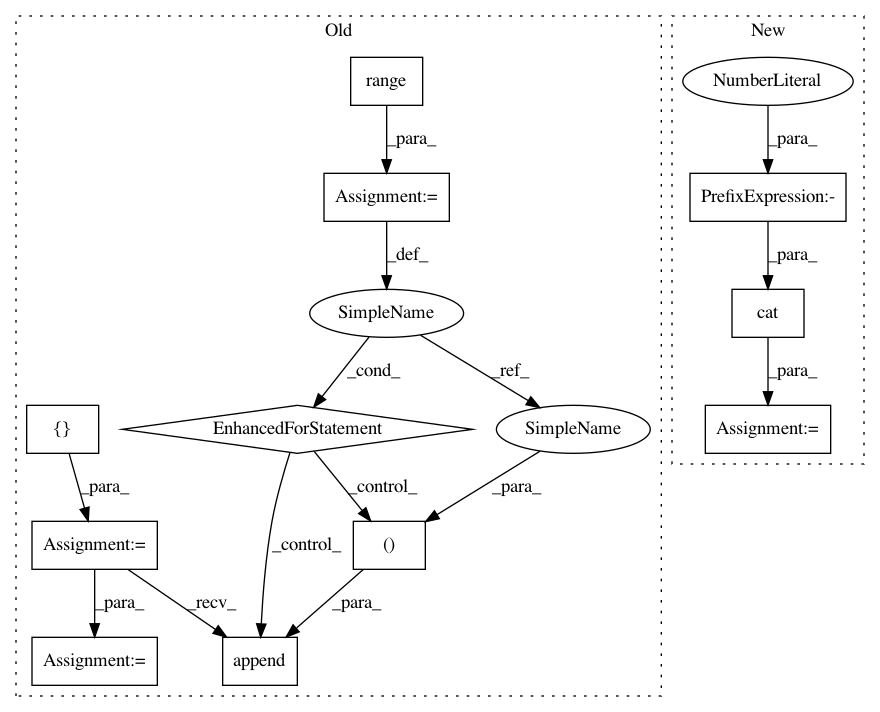

9b664bd7cd8dbb9657626166ba61887ed06774d7,gpytorch/utils/toeplitz.py,,index_coef_to_sparse,#Any#Any#Any#,6
Before Change
num_target_points, num_coefficients = value_matrix.size()
index_list = [[], []]
value_list = []
for i in range(num_target_points):
for j in range(num_coefficients):
if value_matrix[i, j] == 0:
continue
index_list[0].append(i)
index_list[1].append(index_matrix[i, j])
value_list.append(value_matrix[i, j])
index_tensor = torch.LongTensor(index_list)
value_tensor = torch.FloatTensor(value_list)
res = torch.sparse.FloatTensor(index_tensor, value_tensor, torch.Size([num_target_points, row_length]))
return res
After Change
row_tensor = torch.arange(0, num_target_points).unsqueeze(1)
row_tensor = row_tensor.repeat(1, num_coefficients).type_as(index_matrix)
index_tensor = torch.cat([row_tensor.view(1, -1), index_matrix.view(1, -1)], 0)
value_tensor = value_matrix.view(-1)
nonzero_indices = value_tensor.nonzero()
if nonzero_indices.storage():
nonzero_indices.squeeze_()
index_tensor = index_tensor.index_select(1, nonzero_indices)
value_tensor = value_tensor.index_select(0, nonzero_indices)
else:
index_tensor = index_tensor.resize_(2, 1).zero_()
value_tensor = value_tensor.resize_(1).zero_()
res = torch.sparse.FloatTensor(index_tensor, value_tensor, torch.Size([num_target_points, row_length]))
return res
In pattern: SUPERPATTERN
Frequency: 3
Non-data size: 11
Instances
Project Name: cornellius-gp/gpytorch
Commit Name: 9b664bd7cd8dbb9657626166ba61887ed06774d7
Time: 2017-09-13
Author: gpleiss@gmail.com
File Name: gpytorch/utils/toeplitz.py
Class Name:
Method Name: index_coef_to_sparse
Project Name: arraiy/torchgeometry
Commit Name: e18e682858c57124d46c40e8ab1d136c009a1f69
Time: 2020-10-06
Author: daniel.koguciuk@gmail.com
File Name: kornia/geometry/homography.py
Class Name:
Method Name: find_homography_dlt
Project Name: cornellius-gp/gpytorch
Commit Name: 9b664bd7cd8dbb9657626166ba61887ed06774d7
Time: 2017-09-13
Author: gpleiss@gmail.com
File Name: gpytorch/utils/toeplitz.py
Class Name:
Method Name: index_coef_to_sparse
Project Name: interactiveaudiolab/nussl
Commit Name: e7b29c20004bc520b202fea982b8db4c760fc822
Time: 2020-08-06
Author: prem@u.northwestern.edu
File Name: tests/ml/test_loss.py
Class Name:
Method Name: test_permutation_invariant_loss_tf